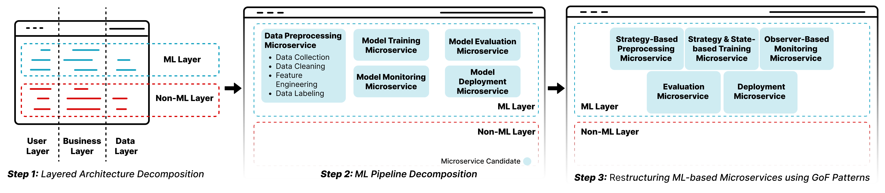
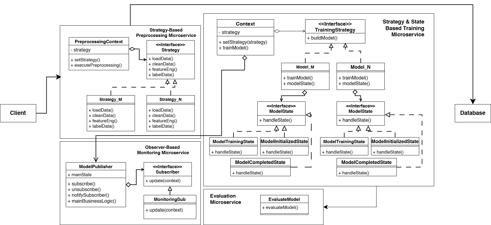

CIFAR10 MSPREDICT
Paper Objective
In this work, our primary objective is to propose a pattern-based microservices identification methodology to guide the migration of monolithic ML-based systems to microservices, which is structured into three distinct steps:
- In the first step, we adopt the layered ML architecture pattern~\cite{Yokoyama2019}, which provides a structured way to separate architectural layers within the monolithic ML-based system, isolating the ML layer from other layers and presenting a layered decomposition driven by the business functionalities of the system. This separation into layers promotes modularity, enabling a more precise identification of business functionalities~\cite{Zaragoza2022}, thus establishing a strong foundation for decomposing monolithic ML-based systems.
- In the second step of our methodology, we use the ML Pipeline pattern~\cite{Amershi2019} to identify microservices candidates within the ML layer based on the different ML pipeline stages. This step specifically targets the identification of classes corresponding to each microservice candidate within the ML layer to clearly identify the distinct stages it comprises. This reduces interservice coupling, ensuring that each microservice handles a specific part of the pipeline, which can then be independently scaled, maintained, and optimized.
- In the final step of our methodology, we focus on effectively structuring the identified microservices candidates. To achieve this, we employ well-established patterns based on the GoF design patterns~\cite{gamma1994design}. These patterns are adapted to the ML context as proposed in~\cite{take_ai_2021}\cite{Take2021}. They have demonstrated robustness in system restructuring, exhibit well-structured and reusable designs, and are widely adopted in the literature.
Methodology Overview

Case Study Description
For the evaluation of ML-based monlith systems migration to microservice methodology, we used monolithic ML-based image classification system built with Python and Flask, using the CIFAR-10 dataset[here add a link to : https://www.cs.toronto.edu/~kriz/cifar.html]. It includes a front-end interface that allows users to upload images and receive predictions of their content based on an image recognition model. To provide the most accurate predictions, several ML models are trained for this purpose: (1) Convolutional Neural Network models, and (2) DenseNet models. We rely on this monolithic ML-based system to evaluate our methodology because it encompasses the different phases of the ML pipeline. It also represents a common and widely relevant use case in the ML ecosystem for image classification. It uses a state-of-the-art dataset for image classification, which is widely used in the literature. Additionally, its open-source nature enhances reproducibility and accessibility, enabling other researchers to replicate our experiments and validate the results.
Monolith System Architecture
The system contains the different parts of the ML pipeline (except for the deployment-related ones, that are not included due to the scale of our case study)
- The Preprocessing Phase: It combines functionalities such as data cleaning, which involves addressing inaccuracies in datasets, and feature engineering, aimed at transforming raw data into features that enhance model performance. It also includes data labeling for annotating training data and data collection for gathering inputs from various sources.
- The Model Training Phase: That’s is responsible for managing processes such as model initialization, hyperparameters tuning, and optimization, thereby forming the foundation for robust model generation.
- The Model Evaluation Phase: That assesses the model's performance through metrics calculation and error analysis.
- The Model Deployment Phase (although not included): It handles the logistics of serving models in production, including endpoint management and load balancing.
- The Monitoring Phase: That ensures ongoing performance checks, alert mechanisms, and issue logging, thus maintaining model integrity over time.
Final Microservices-based ML System Architecture
The final architecture is an ML microservices-based system that integrates the main stages of the ML pipeline, structured using design patterns that enhance scalability, maintainability, and flexibility. To achieve this, we began by identifying the ML layer and decomposing it into four candidate microservices based on the ML pipeline patter.
- The first microservice is the preprocessing microservice, responsible for handling all preprocessing tasks, including data cleaning, transformation, and feature engineering. It includes classes such as DataCollection, DataCleaning, FeatureEngineering, and DataLabeling.
- The second microservice is the model training microservice, which focuses on training ML models using the prepared data. This microservice includes classes such as CNNModel and DenseModel that represent the different models used in our case study and manages tasks like hyperparameter tuning and model optimization.
- The third is the model evaluation microservice, responsible for assessing model performance through metrics calculation, validation, and comparison. It includes classes such as ModelEvaluation and ensures that trained models meet the required standards before deployment.
- Finally, the model monitoring microservice is tasked with tracking the performance of deployed models. This decomposition aligns each microservice with a distinct ML pipeline phase adhering to the single responsibility principle in microservices architectures.
After identifying the candidate microservices, we restructure them using GoF design patterns. The results are depicted in FigureX. We illustrate how the Strategy design pattern, for example, is applied within the preprocessing microservice. Here, two distinct preprocessing strategies are implemented: a basic preprocessing approach and a data augmentation-based technique. The augmentation approach synthetically expands the dataset by generating varied instances of images, enhancing data diversity, and improving model robustness. Selection between these preprocessing strategies is managed through a Strategy Context class, allowing dynamic specification of the desired method at the initial phase of the ML pipeline. Within the model training microservice, also depicted in FigureX, we utilize both Strategy and State design patterns. The Strategy pattern facilitates the flexibility to select between different machine learning models, enabling the specification of which model to train through a TrainingStrategy class. The State pattern is employed to manage different phases of the training life-cycle, adapting behavior according to the model's state. Lastly, for model monitoring, the Observer pattern is implemented to support real-time tracking of model performance metrics. This pattern allows other microservices or external monitoring tools to subscribe to and receive updates from the training service, promoting a responsive and dynamic monitoring mechanism across the system.